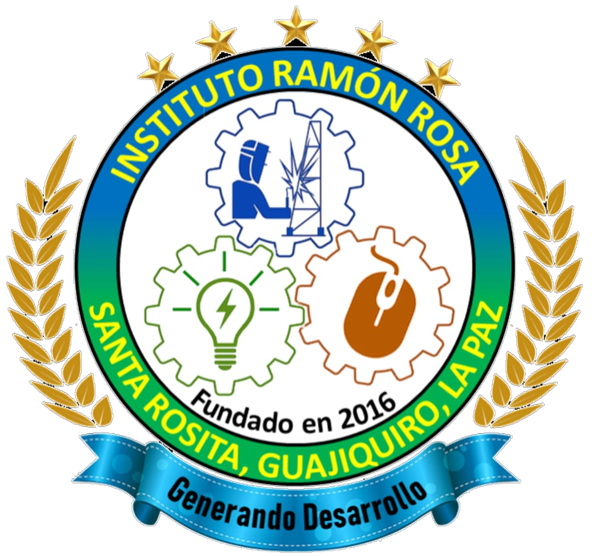

INSTITUTO "RAMON ROSA"¡GENERANDO DESARROLLO!

PERFIL DE ESTUDIANTE EN BACHILLERATO TECNICO PROFESIONAL EN INFORMATICA
perfil del egresado
- Conjunto de Conocimientos, habilidades, destrezas, actitudes y comportamientos integrados que caracterizan
las competencias técnicas específicas alcanzadas por el egresado de la carrera de Bachiller Técnico Profesional en Informática
- Duración: 3 años.
- Competencias El estudiante será capaz de diseñar presentaciones, bases de datos, diseño de publicaciones, navegadores de Internet, servicios
de mensajería electrónica, tráfico, respaldo y manejo de archivos de forma local y en red, procesadores de texto, hojas de cálculo, etc.
- Soporte Técnico: Instalación, mantenimiento y reparación de computadoras.
- Instalación de Redes: Instalación, mantenimiento y reparación de redes de computadoras.
- Diseño Web: Creación, Mantenimiento y actualización de sitios Web.
- Campo laboral El Bachiller Técnico en Informática se podrá desempeñar en
- Centros o departamentos de informática de cualquier institució o empresa
- Creación de medianas empresas dedicadas a asesorías en sistemas de información, mantenimiento
correctivo y preventivo de equipo tecnológico, instalación de redes locales y capacitación sobre tecnología.
- El egresado de este bachillerato podrá demostrar en el campo de trabajo profesionalismo, con una cultura y práctica de
capacitación constante según los últimos avances tecnológicos.
- Plan de estudios
- Décimo
- Matemática
- Español
- Física
- Química
- Biología
- Inglés
- Sociología
- Informática
- Fundamentos de la Psicología
- Historia de Honduras
- Educación Física y Deportes
- Undecimo
- Matemática
- Español
- Física Aplicad
- Filosofia
- Biología
- Inglés
- Legislacion
- Informática
- ofimatica
- Analisis y diseño de sistemas
- programacion
- Duodecimo
- Laboratorio de Informática III
- Programación III
- Mantenimiento y Reparación I
- Redes Informáticas I
- Diseño WEB
- Laboratorio de Informática IV
- Programación IV
- Mantenimiento y Reparación II
- Redes Informáticas II
- Diseño WEB II
- Práctica Profesional
- Trabajo Educativo Social